Minha Biblioteca
no seu curso
Como verificar a integração, disponibilizar acesso e adicionar livros diretamente nos seus módulos.
1. Verificar a configuração na disciplina
Antes de usar, confirme se a MB está ativa no seu curso
A Minha Biblioteca é habilitada no Canvas pelo administrador da instituição. Uma vez instalada, ela fica disponível nas disciplinas. Como professor, você controla se o item aparece — ou fica oculto — no menu do curso para os alunos.
Como verificar e ajustar a visibilidade
- Dentro da sua disciplina, clique em Configurações no menu lateral esquerdo
- Clique na aba Navegação
- A página exibe dois blocos: itens ativos (acima, visíveis ao aluno) e itens inativos (abaixo, ocultos)
- Localize Minha Biblioteca — veja em qual bloco ela está
- Arraste o item entre os blocos conforme sua necessidade
- Clique em Salvar para confirmar
2. Formas de disponibilizar a Minha Biblioteca
Escolha a abordagem que melhor se encaixa na sua disciplina
Há duas formas de dar acesso à Minha Biblioteca para os alunos. Você pode usar uma ou as duas ao mesmo tempo:
Acesso pelo menu lateral
A MB aparece automaticamente no menu da disciplina. O aluno clica no item e acessa a home da Minha Biblioteca, onde pode buscar qualquer livro ou material disponível.
Link direto nos Módulos
Você adiciona livros ou páginas específicas diretamente dentro de um módulo. O aluno clica e já abre exatamente no conteúdo indicado.
Recomendado para conteúdo programático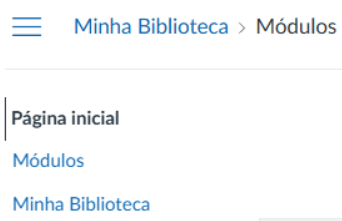
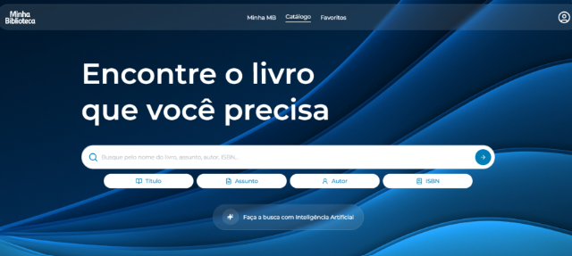
| Característica | Menu lateral (A) | Módulos (B) |
|---|---|---|
| Onde aparece | Menu lateral do curso | Dentro dos módulos da disciplina |
| O que o aluno vê ao clicar | Home da MB — busca livre | O livro ou página exata configurada |
| Configuração necessária | Nenhuma (visibilidade ativa) | Professor adiciona os itens |
| Ideal para | Acesso geral ao acervo | Leituras obrigatórias, bibliografias por semana |
3. Adicionar livros nos Módulos (Deep Linking)
Vincule conteúdos específicos diretamente no plano da disciplina
Dentro de cada módulo da disciplina, você pode adicionar a Minha Biblioteca como ferramenta externa. Ao fazer isso, o Canvas abre automaticamente uma interface de seleção de conteúdo (Deep Linking) — você escolhe os livros ou páginas e cada seleção vira um item independente no módulo.
Passo a passo
Acesse Módulos no menu lateral da disciplina
Navegue até Módulos no menu da disciplina. Utilize um módulo já existente ou crie um novo. Note o botão "+" no canto direito do cabeçalho do módulo.
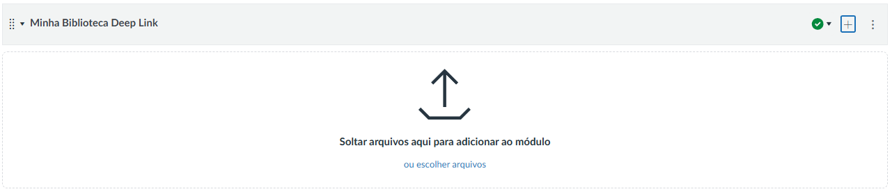
Clique no "+" e selecione "Ferramenta externa"
Clique no "+" para abrir a tela de adição de itens. No campo "Adicionar", abra o menu e escolha Ferramenta externa.
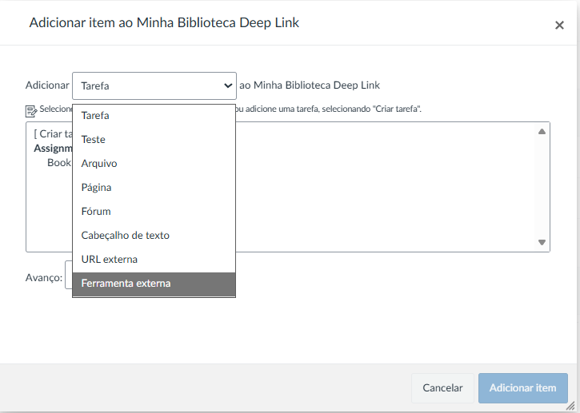
Escolha a Minha Biblioteca na lista de ferramentas
A lista de ferramentas disponíveis aparece. Localize e clique na Minha Biblioteca. O nome pode variar conforme a configuração da sua instituição.
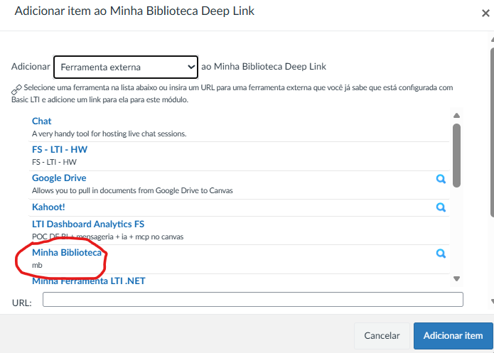
Interface de seleção da MB abre automaticamente
Uma janela da Minha Biblioteca abre dentro do Canvas — é a interface de Deep Linking. Use a busca para encontrar o conteúdo desejado.
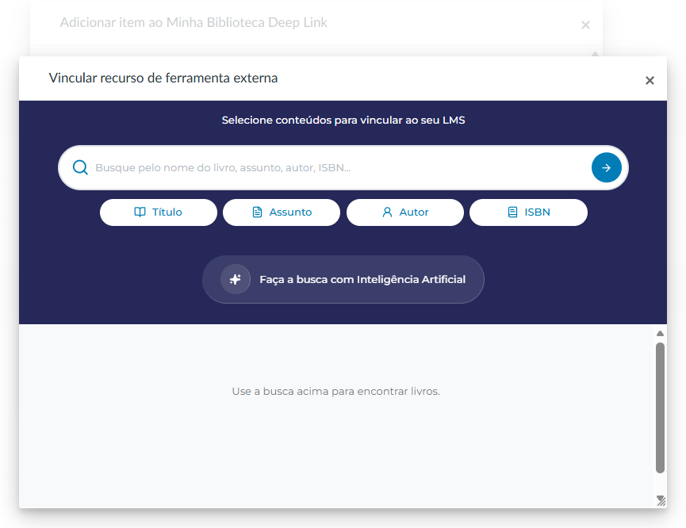
Busque e escolha o livro ou página
Pesquise pelo título, autor, assunto ou ISBN. Para cada resultado, escolha Selecionar livro (abre o livro do início) ou Selecionar página (abre em uma página específica).
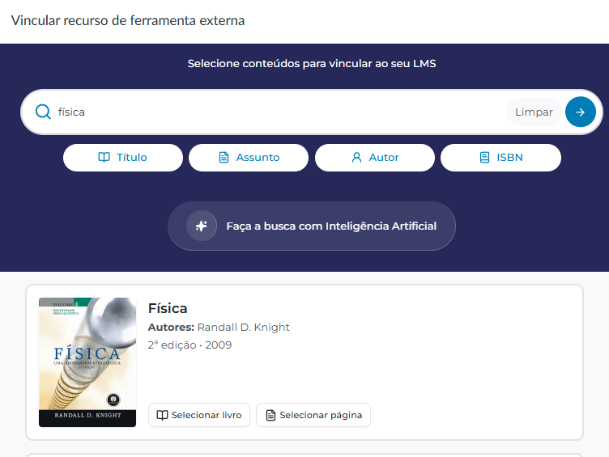
Escolha como vincular o conteúdo
Para cada livro encontrado, escolha uma das opções abaixo:
Clique em "Selecionar livro"
O livro é adicionado diretamente à fila. Clique em Finalizar seleção para retornar ao Canvas.
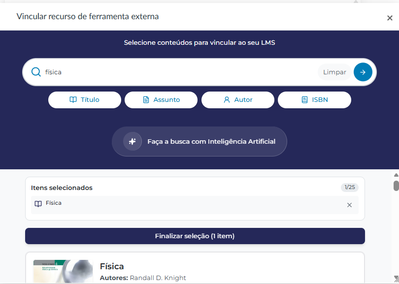
Clique em "Selecionar página"
A MB exibe as instruções e o botão para abrir o livro.
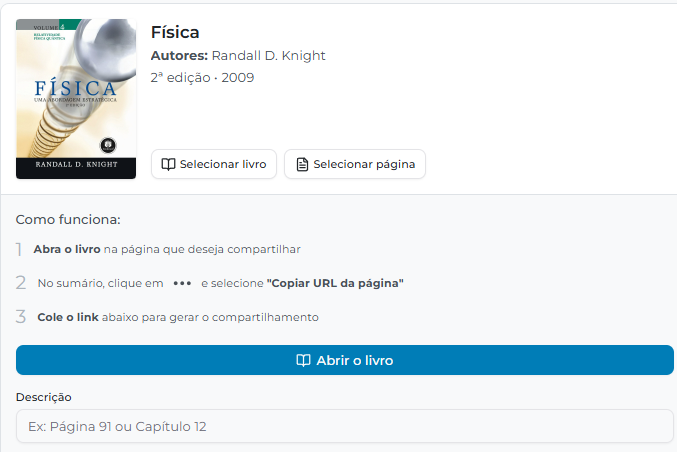
- Clique em Abrir o livro e navegue até a página desejada. No sumário, clique em ••• ao lado do título e selecione "Copiar URL da página".
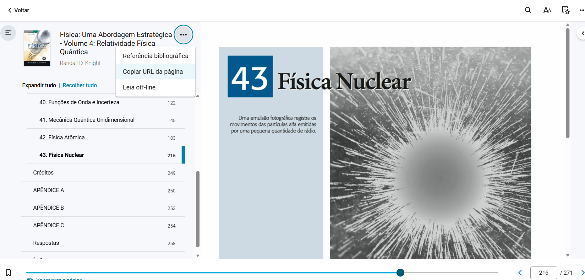
- Um modal exibe a URL da página. Clique em Copiar.
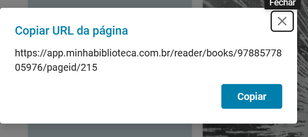
- Volte à tela do Deep Link. Cole a URL no campo "URL do livro", adicione uma Descrição (ex.: nome do capítulo) e clique em Adicionar seleção.
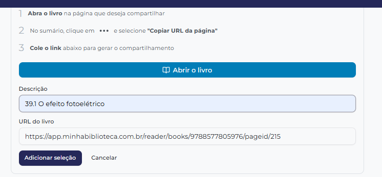
- A página aparece em Itens selecionados com a descrição informada. Clique em Finalizar seleção para retornar ao Canvas.
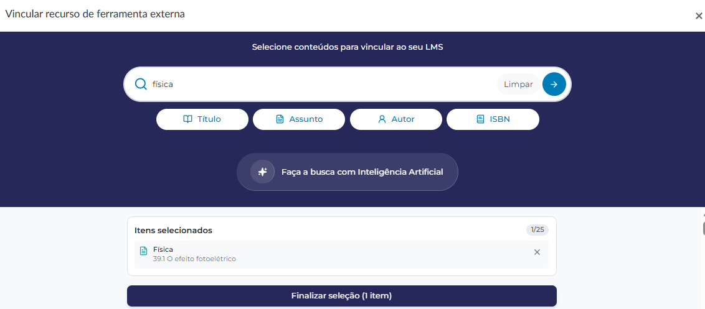
Confirme no Canvas — somente se adicionou um único item
O Canvas retorna com a Minha Biblioteca selecionada e a URL preenchida automaticamente. Se você selecionou apenas um livro ou página, clique em Adicionar item para vincular ao módulo.
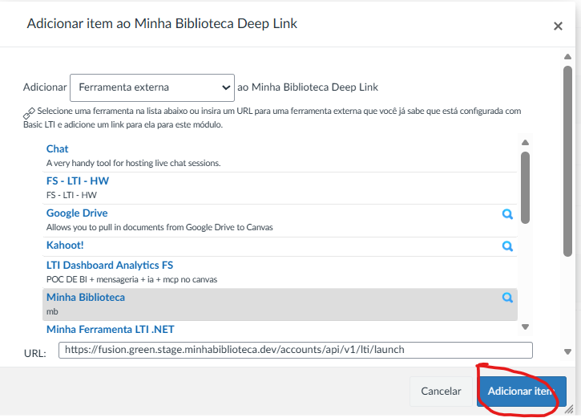
O item aparece vinculado no módulo
Cada livro ou página confirmado é adicionado como um item independente no módulo. O aluno clica e acessa diretamente aquele conteúdo, sem precisar buscar.
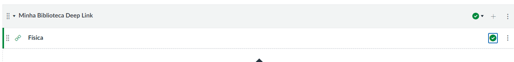
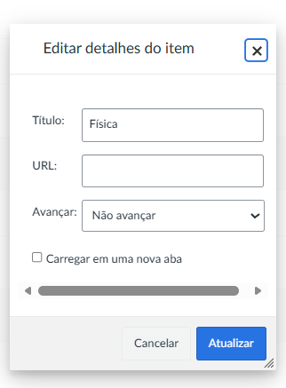
Ao final, seus alunos verão, dentro do módulo, cada livro como um link nomeado. Ao clicar, são redirecionados diretamente para aquela leitura na Minha Biblioteca — com autenticação automática, sem precisar fazer login separado.
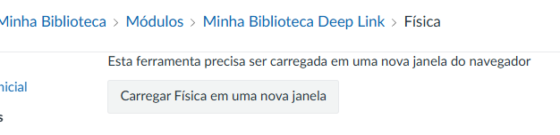
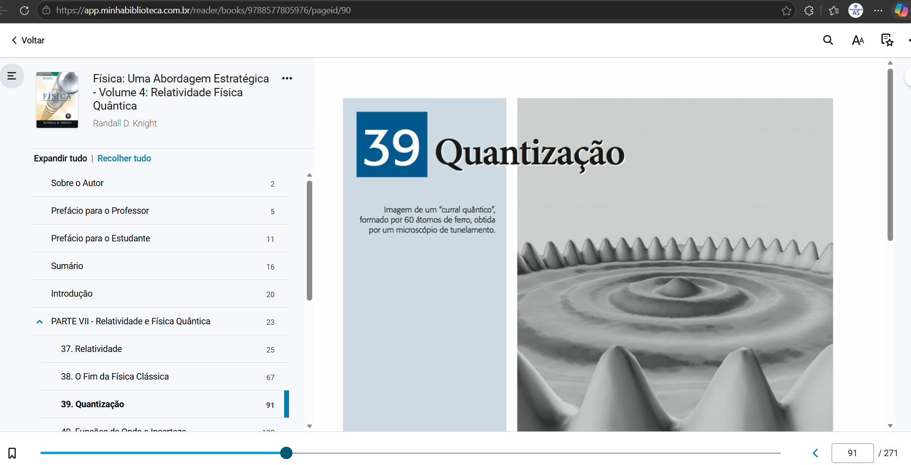
Gerenciar múltiplos livros
Você pode repetir o processo para adicionar quantos livros quiser ao mesmo módulo ou a módulos diferentes. Cada item pode ser renomeado no próprio Canvas para facilitar a identificação pelo aluno (ex.: "Capítulo 3 — Fundamentos").
Resultado para o aluno em cada cenário
| Como o professor configurou | O que o aluno vê ao clicar |
|---|---|
| Acesso pelo menu lateral | Home da Minha Biblioteca — busca livre em todo o acervo |
| Item no módulo (livro inteiro) | O livro escolhido, aberto desde o início |
| Item no módulo (página específica) | Aquela página exata do livro, pronta para leitura |
Dúvidas frequentes
Situações comuns e como resolver
O aluno clicou e deu erro de acesso
Verifique se o aluno está cadastrado no Canvas com e-mail completo e válido (ex.: nome@instituicao.edu.br) e com nome e sobrenome preenchidos. Dados incompletos no cadastro do LMS causam falha de autenticação na MB.
A Minha Biblioteca não aparece nem no menu nem para adicionar nos módulos
A ferramenta precisa ter sido instalada e habilitada pelo administrador do Canvas. Entre em contato com o setor de TI ou suporte da sua instituição.
O aluno acessa a MB mas não tem acesso ao livro que indiquei
O acesso ao conteúdo depende do contrato da instituição com a Minha Biblioteca. Se o aluno consegue abrir a MB mas não vê o livro, entre em contato com o suporte da MB para verificar o acervo contratado.
Posso reutilizar os mesmos itens em semestres futuros?
Sim. Os itens adicionados via Deep Linking ficam salvos nos módulos. Ao copiar ou replicar o curso no Canvas, esses links são mantidos e continuam funcionando normalmente.
O item abre dentro do Canvas ou em nova aba?
Depende de como a ferramenta foi configurada pelo administrador. O comportamento mais comum é abrir em uma nova aba. Caso prefira outro comportamento, o administrador pode ajustar as configurações da ferramenta.
Precisa de ajuda?
Para dúvidas técnicas sobre a integração, entre em contato com o suporte da sua instituição ou da Minha Biblioteca.
Para dúvidas sobre o acervo ou acesso a livros, acesse o suporte em minhabiblioteca.com.br.